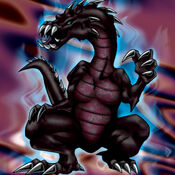

Crawling Dragon #2

STATS
ATK: 1600
DEF: 1200DECK COST
Deck Cost per Card: 28Fusion List (43 Possible Fusions)
- Crawling Dragon #2 + Abyss Flower = B. Dragon Jungle King
- Crawling Dragon #2 + Ameba = Kairyu-Shin
- Crawling Dragon #2 + Ancient Jar = Stone D.
- Crawling Dragon #2 + Ansatsu = Sword Arm of Dragon
- Crawling Dragon #2 + Armaill = Sword Arm of Dragon
- Crawling Dragon #2 + Armed Ninja = Sword Arm of Dragon
- Crawling Dragon #2 + Armored Zombie = Skelgon
- Crawling Dragon #2 + Axe Raider = Sword Arm of Dragon
- Crawling Dragon #2 + Blue-Eyed Silver Zombie = Skelgon
- Crawling Dragon #2 + Bolt Escargot = Twin-Headed Thunder Dragon
- Crawling Dragon #2 + Bolt Penguin = Twin-Headed Thunder Dragon
- Crawling Dragon #2 + Bone Mouse = Skelgon
- Crawling Dragon #2 + Celtic Guardian = Sword Arm of Dragon
- Crawling Dragon #2 + Change Slime = Kairyu-Shin
- Crawling Dragon #2 + Clown Zombie = Skelgon
- Crawling Dragon #2 + Dark Plant = B. Dragon Jungle King
- Crawling Dragon #2 + Darkworld Thorns = B. Dragon Jungle King
- Crawling Dragon #2 + Dissolverock = Stone D.
- Crawling Dragon #2 + Dorover = Kairyu-Shin
- Crawling Dragon #2 + Dragoness the Wicked Knight = Sword Arm of Dragon
- Crawling Dragon #2 + Electric Lizard = Twin-Headed Thunder Dragon
- Crawling Dragon #2 + Electric Snake = Twin-Headed Thunder Dragon
- Crawling Dragon #2 + Fiend Sword = Sword Arm of Dragon
- Crawling Dragon #2 + Firegrass = B. Dragon Jungle King
- Crawling Dragon #2 + Flame Ghost = Skelgon
- Crawling Dragon #2 + Greenkappa = Sword Arm of Dragon
- Crawling Dragon #2 + Jellyfish = Kairyu-Shin
- Crawling Dragon #2 + Jinzo #7 = Cyber Saurus
- Crawling Dragon #2 + Kaminarikozou = Twin-Headed Thunder Dragon
- Crawling Dragon #2 + LaLa Li-oon = Twin-Headed Thunder Dragon
- Crawling Dragon #2 + M-Warrior #1 = Sword Arm of Dragon
- Crawling Dragon #2 + Mega Thunderball = Twin-Headed Thunder Dragon
- Crawling Dragon #2 + Muka Muka = Stone D.
- Crawling Dragon #2 + Mushroom Man = B. Dragon Jungle King
- Crawling Dragon #2 + Oscillo Hero #2 = Twin-Headed Thunder Dragon
- Crawling Dragon #2 + Phantom Ghost = Skelgon
- Crawling Dragon #2 + Princess of Tsurugi = Sword Arm of Dragon
- Crawling Dragon #2 + Queen's Double = Sword Arm of Dragon
- Crawling Dragon #2 + Rainbow Flower = B. Dragon Jungle King
- Crawling Dragon #2 + Skull Servant = Skelgon
- Crawling Dragon #2 + Succubus Knight = Sword Arm of Dragon
- Crawling Dragon #2 + The Immortal of Thunder = Twin-Headed Thunder Dragon
- Crawling Dragon #2 + Yashinoki = B. Dragon Jungle King